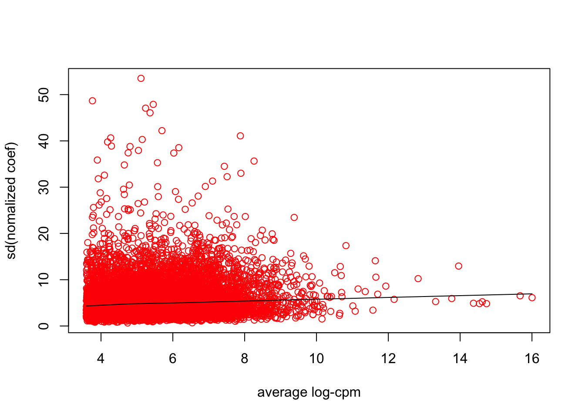
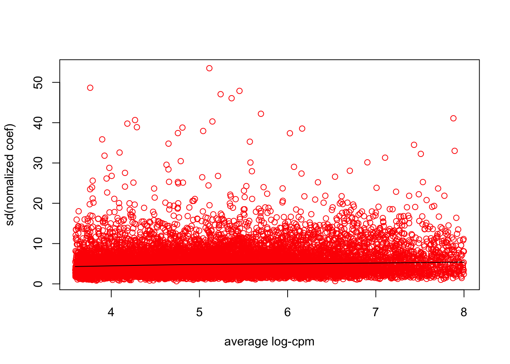
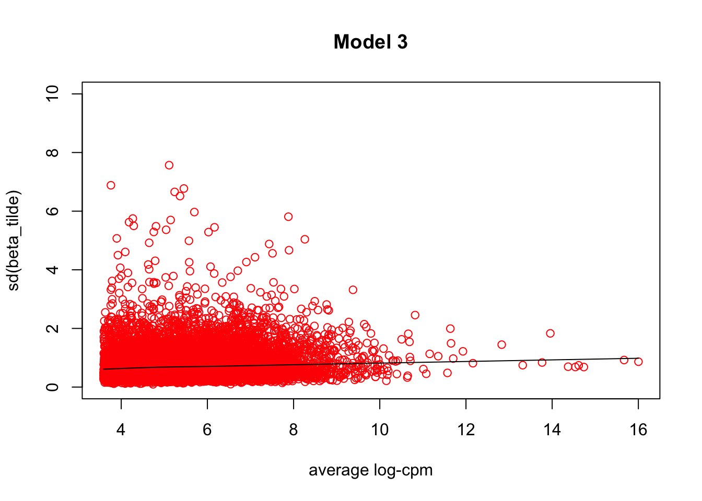
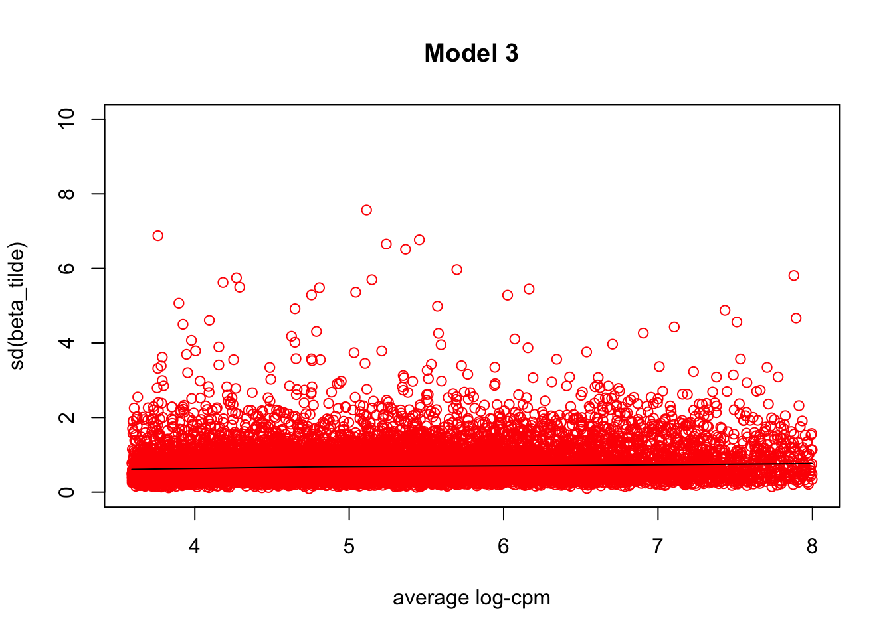
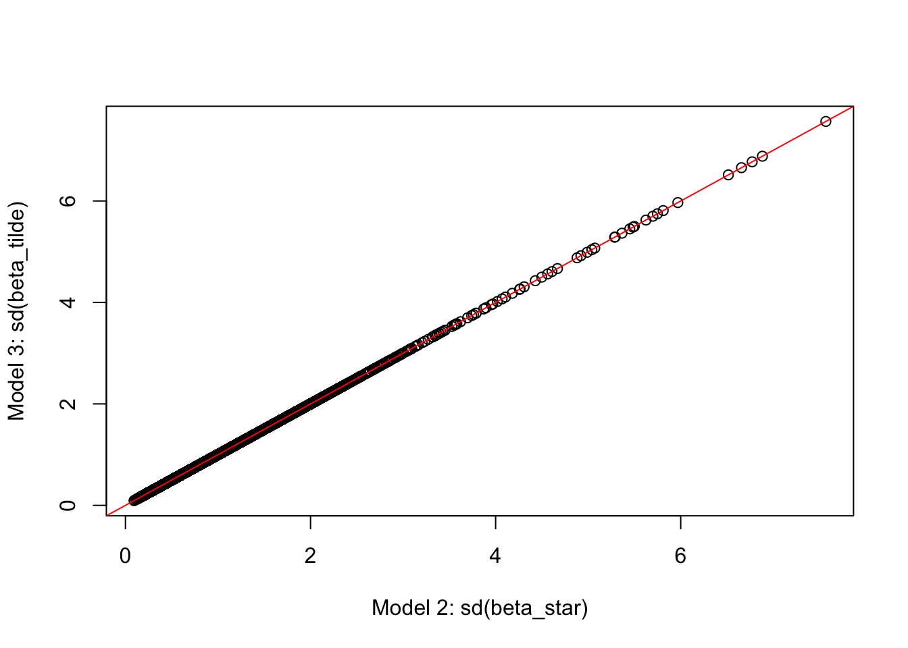

Last updated: 2016-05-02
Code version: 8cbccb9c71ea875854d5b72ea2506bd5cd265b4a
Previously we used fash to analyze the variance decomposition for a simple random effect model \[Y_{i}=\mu+\beta_{c(i)}+e_i,\] where \(\beta_{c(i)}\sim N(0,\sigma^2)\) and \(e_i\sim N(0,s^2)\), and we can estimate the PVE (\(\sigma^2/(\sigma^2+s^2)\)).
However, for RNA-seq data, after voom transformation we have a weighted linear regression model for each gene \(g\) (suppose \(N\) is number of samples in each group and \(K\) is number of groups, so \(Y_g\) is \(NK\)-vector and \(\beta_g\) is \(K\)-vector): \[Y_g=X\beta_g+W_g^{-1/2}e_g,\] where \(X\) is the design matrix, \(W_g\) is the diagonal weight matrix (weights inversly proportional to \(Var(Y_g)\), and \(e_g\sim N(0,s_g^2I_{NK \times NK})\)). Note that \(W_g\) depends on count level, but \(s_g^2\) doesn’t! \(s_g^2\) is the de-trended error variance.
Now our goal is to model the random effect \(X\beta_g\). A few possible ways (note: \(\sigma^2\) doesn’t depend on count level!):
Model 1: \(Y_g=\mu_g+X\beta_g+W_g^{-1/2}e_g\) and \(\beta_g\sim N(0,\sigma_g^2 I_{K \times K})\). However this model’s ANOVA F-statistic doesn’t have close form distribution!
Model 2: \(Y_g=\mu_g+X\beta_g+W_g^{-1/2}e_g\) and \(\beta_g\sim N(0,\sigma_g^2N(X^TW_gX)^{-1})\). In the balanced design model, this assumption means that \(\beta_g\)’s variance is inversely proportional to the average observation’s weights within each group. So the ANOVA’s F-statistic will follow the distribution (Johnson 2007) \[F_g\sim (1+N\sigma_g^2/s_g^2)F(K-1,NK-K).\]
Model 3: \(Y_g=\mu_g+W_g^{-1/2}X\tilde{\beta_g}+W_g^{-1/2}e_g\) and \(\tilde{\beta}_g\sim N(0,\sigma_g^2 I_{K \times K})\). Note that \(\tilde{\beta}\) is different from \(\beta\) defined in voom paper and the interpretation changes!
We check whether Model 2 and Model 3’s assumption is sensible on GTEx data.
First define functions to generate RNA-Seq datasets (we use GTEx data). Here we use data from multiple tissues (conditions), and analyze the conditional effects using F-test, limma or fash (on voom-transformed data).
library(edgeR)Loading required package: limmalibrary(limma)
library(qvalue)Warning: replacing previous import by 'grid::arrow' when loading 'qvalue'Warning: replacing previous import by 'grid::unit' when loading 'qvalue'source("../code/fash.R")Loading required package: stats4Loading required package: evd
Attaching package: 'evd'The following object is masked from 'package:ashr':
densdatamaker = function(args){
if (length(args$tissue)<args$ngroup){
stop("Not enough tissues!")
}
rawdata = list()
for (i in 1:args$ngroup){
rawdata[[i]] = read.table(paste0("/Volumes/PERSONAL/MS/gtex/tissues/",
args$tissue[i],".txt"),header=TRUE)
}
# randomly choose samples for each gene
counts = NULL
for (i in 1:args$ngroup){
counts = cbind(counts, selectsample(rawdata[[i]], args$nsamp, args$breaksample))
}
rm("rawdata")
counts = shufflegroup(counts, args$ngroup, args$nsamp, args$breaksample)
# Remove genes without any reads
counts = counts[apply(counts,1,sum)>0,]
# Take the top Ngene high-expressed genes
counts = counts[sort(order(rowSums(counts),decreasing=TRUE)[1:args$ngene]),]
condition = factor(rep(1:args$ngroup,each=args$nsamp))
# Voom transformation + limma
voomlim = voom_transform(counts, condition)
# f-test
ftest = varcomp_voom(voomlim$v, condition)
# meta data
meta = list(args=args)
# input data
input = list(counts=counts, condition=condition,
v=voomlim$v, avelogcpm=voomlim$avelogcpm,
fstats.limma=voomlim$fstats, pve.limma=voomlim$pve, pvalue.limma=voomlim$pvalue,
df1.limma=args$ngroup-1, df2.limma=voomlim$lim$df.total[1],
fstats.ftest=ftest$fstats, pve.ftest=ftest$pve)
data = list(meta=meta,input=input)
return(data)
}
# Voom transformation
voom_transform = function(counts, condition, W=NULL){
dgecounts = calcNormFactors(DGEList(counts=counts,group=condition))
if (is.null(W)){
design = model.matrix(~condition)
}else{
design = model.matrix(~condition+W)
}
v = voom(dgecounts,design,plot=FALSE)
lim = lmFit(v)
lim = eBayes(lim[,-1])
pve = pve_ftest(length(condition)/length(unique(condition)),
lim$s2.post*lim$F, lim$s2.post)
dgecounts = estimateDisp(dgecounts, design, robust=TRUE)
avelogcpm = dgecounts$AveLogCPM
return(list(v=v, lim=lim, avelogcpm=avelogcpm,
fstats=lim$F, pvalue=lim$F.p.value, pve=pve))
}
varcomp_voom = function(v, condition){
combo = cbind(v$E,v$weights)
tmp = apply(combo,1,voom_ftest,condition=condition)
MST=tmp[2,]
MSE=tmp[3,]
pve = pve_ftest(length(condition)/length(unique(condition)), MST, MSE)
return(list(fstats=tmp[1,], MST=MST, MSE=MSE, pve=pve))
}
voom_ftest = function(ynweights,condition){
y = ynweights[1:(length(ynweights)/2)]
weights = ynweights[(length(ynweights)/2+1):length(ynweights)]
fit = lm(y~condition, weights=weights)
MST = anova(fit)$M[1]
MSE = anova(fit)$M[length(anova(fit)$M)]
fstat = anova(fit)$F[1]
return(c(fstat,MST,MSE))
}
# randomly subsample data for each gene
# gene: a vector of reads for one gene
# nsamp: # of samples wanted
sampleingene = function(gene, nsamp){
sample = sample(length(gene),nsamp)
return(c(gene[sample]))
}
# Randomly select samples
# counts: full count matrix
# nsamp: # of samples wanted
# breaksample: flag, if select different samples for each gene
selectsample = function(counts, nsamp, breaksample){
if (breaksample==FALSE){
subsample = sample(1:dim(counts)[2],nsamp)
counts = counts[,subsample]
}else{
counts = t(apply(counts, 1, sampleingene, nsamp=nsamp))
}
return(counts)
}
# randomly shuffle the groups' order for each gene
# to avoid the unequal library size issue
shufflegroup = function(counts, ngroup, nsamp, breaksample){
if (breaksample==TRUE){
return(t(apply(counts, 1, shufflegroup_vec, ngroup=ngroup, nsamp=nsamp)))
}else{
return(counts)
}
}
shufflegroup_vec = function(gene, ngroup, nsamp){
idx = sample(ngroup,replace=FALSE)
idx = rep((idx-1)*nsamp,each=nsamp)+1:nsamp
return(gene[idx])
}
pve_ftest = function(nsamp,MST,MSE){
sigma.c2.hat = pmax(0,(MST-MSE)/nsamp)
sigma.e2.hat = MSE
return(sigma.c2.hat/(sigma.c2.hat+sigma.e2.hat))
}
pve_plugin = function(nsamp,fashobj){
(exp(fashobj$PosteriorMean.logf)-1)/(exp(fashobj$PosteriorMean.logf)-1+nsamp)
}Sample dataset (independent genes): for each gene, randomly choose 50 samples from each of the 10 tissues. We randomly shuffle the order of the 10 tissues for each gene, such that the library sizes of all samples are similar so we won’t have the unequal library sizes issue.
set.seed(1234)
# Generate a pure null dataset
args = list(tissue=c("Brain-Amygdala","Brain-Caudate(basalganglia)","Brain-CerebellarHemisphere",
"Brain-Cerebellum","Brain-Cortex","Brain-FrontalCortex(BA9)",
"Brain-Nucleusaccumbens(basalganglia)","Brain-Hippocampus","Brain-Hypothalamus",
"Brain-Substantianigra"),
ngene=10000, ngroup=10, nsamp=50, breaksample=TRUE)
test = datamaker(args)Since Model 2 assumes that \(Var(\beta)=\sigma^2N(X^TWX)^{-1}\), where \(\sigma^2\)’s are exchangeable across genes and do not depend on count levels. Therefore the variances of the normalized effect sizes \(\beta^*_g:=\beta_g/\sqrt{N(X^TWX)^{-1}}\) should be exchangeable. We see that there are no obvious trend between the distribution of \(sd(\hat{\beta^*})\) and the average log-cpm values if we remove the leverage points on the right.
# compute the normalizing factors (X'WX) for each gene
scalew_vec = function(weights, condition){
return(t(apply(weights,1,scalew, model.matrix(~condition)[,-1])))
}
# X: design matrix, W: weights
# return new weights: diagonal of (X'WX)^(-1)
scalew = function(W, X){
diag(solve(t(X)%*%diag(W)%*%X))
}
# fit the regression coefficients beta
lim = lmFit(test$input$v,model.matrix(~test$input$condition))
# normalize beta by sqrt(X'WX)^(-1)
weights_beta = scalew_vec(test$input$v$weights,test$input$condition)
coef_w = lim$coefficients[,-1]/sqrt(test$meta$args$nsamp*weights_beta) # no intercept
# plot sd's of normalized beta against average log-cpm
sd_coef_w = apply(coef_w, 1, sd)
scatter.smooth(test$input$avelogcpm, sd_coef_w,col=2,ylim=c(0,10),
xlab="average log-cpm", ylab="sd(beta_star)",main="Model 2")
# remove some leverage points on the right
scatter.smooth(test$input$avelogcpm[test$input$avelogcpm<8], sd_coef_w[test$input$avelogcpm<8],
ylim=c(0,10),col=2,xlab="average log-cpm", ylab="sd(beta_star)",main="Model 2")
We fit \(\tilde{\beta}\) by running a simple linear regression data on centered and normalized data \(\tilde{Y}_g:=W_g^{1/2}(Y_g-\mu_g)=X\tilde{\beta}_g+e_g\). Since Model 3 assumes that \(\tilde{\beta}_g\sim N(0,\sigma_g^2)\) and \(\sigma_g^2\) does not depend on count level, we can plot \(sd(\hat{\tilde{\beta}})\) against the average log-cpm values and check if there is obvious trend. Similar to the above discussion for Model 2, there is no obvious relationship between them if we drop some leverage points on the right.
# Y_tilde is centered and normalized by error weights
Y_tilde = (test$input$v$E-lim$coefficients[,1])*sqrt(test$input$v$weights)
# fit beta_tilde
reg = function(y,condition){
m = lm(y~condition)
m$coef+c(0,rep(m$coef[1],length(m$coef)-1))
}
coef_tilde = t(apply(Y_tilde,1,reg, condition=test$input$condition))
# plot plot sd's of beta_tilde against average log-cpm
sd_coef_tilde = apply(coef_tilde[,-1],1,sd)
scatter.smooth(test$input$avelogcpm, sd_coef_tilde,col=2,ylim=c(0,10),
xlab="average log-cpm", ylab="sd(beta_tilde)",main="Model 3")
# remove some leverage points on the right
scatter.smooth(test$input$avelogcpm[test$input$avelogcpm<8], sd_coef_tilde[test$input$avelogcpm<8],
col=2,ylim=c(0,10),xlab="average log-cpm", ylab="sd(beta_tilde)",main="Model 3")
Actually in this dataset, Model 2’s \(sd(\hat{\tilde{\beta}})\) and Model 3’s \(sd(\hat{\tilde{\beta}})\) are almost same.
plot(sd_coef_w,sd_coef_tilde, xlab="Model 2: sd(beta_star)",ylab="Model 3: sd(beta_tilde)")
abline(0,1,col=2)
[1] Johnson, Valen E. “Properties of Bayes factors based on test statistics.” Scandinavian Journal of Statistics 35.2 (2008): 354-368. [2] Johnson, Valen E. “Bayes factors based on test statistics.” Journal of the Royal Statistical Society: Series B (Statistical Methodology) 67.5 (2005): 689-701.
sessionInfo()R version 3.2.3 (2015-12-10)
Platform: x86_64-apple-darwin13.4.0 (64-bit)
Running under: OS X 10.10.5 (Yosemite)
locale:
[1] en_US.UTF-8/en_US.UTF-8/en_US.UTF-8/C/en_US.UTF-8/en_US.UTF-8
attached base packages:
[1] stats4 stats graphics grDevices utils datasets methods
[8] base
other attached packages:
[1] truncdist_1.0-1 evd_2.3-2 ashr_1.0.12 qvalue_2.2.0
[5] edgeR_3.10.5 limma_3.24.15 knitr_1.12.3
loaded via a namespace (and not attached):
[1] Rcpp_0.12.4 magrittr_1.5 MASS_7.3-45
[4] splines_3.2.3 statmod_1.4.24 pscl_1.4.9
[7] munsell_0.4.3 doParallel_1.0.10 lattice_0.20-33
[10] SQUAREM_2014.8-1 colorspace_1.2-6 foreach_1.4.3
[13] stringr_1.0.0 plyr_1.8.3 tools_3.2.3
[16] parallel_3.2.3 grid_3.2.3 gtable_0.1.2
[19] iterators_1.0.8 htmltools_0.3 yaml_2.1.13
[22] digest_0.6.9 reshape2_1.4.1 ggplot2_2.0.0
[25] formatR_1.2.1 codetools_0.2-14 evaluate_0.8
[28] rmarkdown_0.9.5 stringi_1.0-1 scales_0.3.0
[31] locfit_1.5-9.1 truncnorm_1.0-7